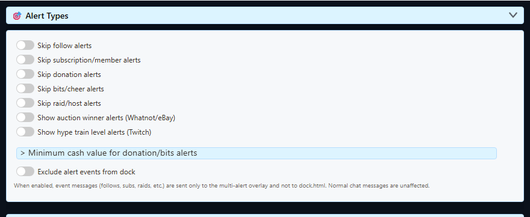

Zacznij od źródła wydarzenia
Multi Alerts wyświetla wydarzenia już przechwycone przez Social Stream. Samodzielnie nie loguje się do Twitcha, Kicka, YouTube, TikToka ani innych platform.
- Połącz i aktywuj źródło platformy dostarczające wydarzenie.
- Pozostaw stronę źródła lub okno źródła osobnej aplikacji aktywne.
- Używaj tego samego ID sesji Social Stream w źródle, menu, doku i URL Multi Alerts.
- Przetestuj nakładkę alertu w jej opcjach przed diagnozowaniem połączenia platformy.
Udany podgląd dowodzi, że układ alertu działa. Nie dowodzi to, że źródło platformy ma uprawnienia do odbierania tego wydarzenia na żywo.
Kategorie Multi Alerts
| Kategoria | Typowe nazwy wydarzeń | Uwagi |
|---|---|---|
| Obserwacja | new_follower, follow, followed | Wymaga źródła przechwytującego obserwacje i odpowiedniego uprawnienia platformy. |
| Subskrypcja | new_subscriber, resub, subscription_gift, aliasy członkostwa | Obejmuje cykliczne, podarowane i podobne do członkostwa wydarzenia tam, gdzie są obsługiwane. |
| Wpłata / prezent | superchat, supersticker, gift, tip, aliasy wpłat | Wiersz czatu z wpłatą może zamiast tego używać hasDonation i donoValue. |
| Bity | cheer, bits | Kwotę można filtrować opcją minimalnej wpłaty/gotówki. |
| Rajd | raid, host, redirect | Dostępność i nazwy zależą od źródła platformy. |
| Aukcja | auction_update | Alerty wygranej aukcji wymagają osobnego włączenia. |
| Hype Train | hype_train | Alerty Hype Train wymagają włączenia i odpowiedniego dostępu Twitch EventSub. |
Liczba widzów, suma obserwujących, stan transmisji i reklam to aktualizacje, a nie zwykłe karty alertów. Użyj Dokumentacja wydarzeń przy tworzeniu odbiorcy API lub własnej nakładki.
Najważniejsze wydarzenia platform
To aktualne kanoniczne nazwy wydarzeń, jeśli wybrany tryb źródła może dostarczyć daną aktywność.
| Aktywność | YouTube | Twitch | Kick |
|---|---|---|---|
| Nowy członek / subskrybent | sponsorship |
new_subscriber |
new_subscriber |
| Odnowienie | resub |
resub |
resub |
| Podarowane członkostwo / subskrypcja | giftpurchase, giftredemption |
subscription_gift |
subscription_gift |
| Płatne wsparcie | superchat, supersticker, jeweldonation |
cheerlub wiersz z hasDonation |
gift dla prezentów KICKs; donation dla wydarzeń wsparcia/napiwków. Oba uzupełniają hasDonation. |
| Alert obserwacji / publicznej subskrypcji | new_follower; opóźnione przez API i tylko publiczne subskrypcje |
new_follower |
new_follower |
| Nagroda kanału | - | reward |
reward |
| Rajd / host | - | raid |
Tylko dane dla zgodności; nie jest to obecna oficjalna subskrypcja wydarzenia Kick |
Uwaga o rajdach Kick: Social Stream akceptuje starsze dane raid/host dla zgodności, ale obecny oficjalny katalog wydarzeń Kick nie ma takiej subskrypcji. Nie uzależniaj przepływu Kick od otrzymania tego wydarzenia.
Tryb standardowy a WebSocket
| Platforma | Standardowe przechwytywanie | Przechwytywanie WebSocket / API |
|---|---|---|
| YouTube | Płatne wiadomości, członkostwa, prezenty członkostwa, aktualizacje widzów i ograniczone wydarzenia wykrywane na stronie. | Wspólne wydarzenia płatności/członkostwa oraz kamienie milowe członkostwa, niedawne publiczne subskrypcje i obsługiwane aktualizacje liczników. |
| Twitch | Nagrody wyświetlone na czacie, powiadomienia o podarowanych subskrypcjach, aktualizacje widzów i kilka powiadomień dostępnych tylko na stronie. | EventSub dodaje obserwacje, subskrypcje, odnowienia, cheery, rajdy, nagrody i obsługiwane wydarzenia liczników/stanu, gdy konto i uprawnienia na to pozwalają. |
| Kick | Czat oraz lekkie znaczniki strony dla prezentów, nagród i aktualizacji widzów. | Oficjalne wydarzenia obserwacji, subskrypcji, prezentów, realizacji nagród, KICKs, moderacji i stanu transmisji po uwierzytelnieniu. |
Tryb WebSocket jest zwykle właściwy dla alertów opartych na wydarzeniach. Standardowe przechwytywanie nadal przydaje się, gdy potrzebujesz tylko wyrenderowanego czatu lub uwierzytelnianie jest niedostępne.
Włącz potrzebne typy alertów
Otwórz opcje Multi Alerts w ustawieniach Social Stream. Obserwacje, subskrypcje, wpłaty, bity i rajdy mają własne ustawienia włączenia, stylu, dźwięku i wyglądu. Aukcje i Hype Train wymagają dedykowanych przełączników.

- Użyj Kolejkuj alerty gdy kilka wydarzeń może nadejść jednocześnie.
- Sprawdź filtry źródeł, jeśli wydarzenia działają w doku, ale nie w Multi Alerts.
- Sprawdź minimalne filtry pieniędzy/wpłat, jeśli brakuje małych napiwków lub cheerów.
- Wykonaj jedną interakcję ze stroną, jeśli reguły automatycznego odtwarzania blokują własny dźwięk alertu.
Sprawdź podgląd przed transmisją
Użyj podglądu, aby sprawdzić kategorię, tekst, kwotę, media, dźwięk, animację i zachowanie kolejki.

Jakich pól używa każde narzędzie
| Narzędzie | Zasada zgodności |
|---|---|
| Multi Alerts | Klasyfikuje kanoniczne event nazwy, aliasy, hasDonation, pola członkostwa i wybrane meta wartości do wspólnych kategorii. |
| Event Flow | Dopasuj dokładne type, eventi pola emitowane przez źródło. Zanim polegniesz na wydarzeniu na żywo, użyj narzędzia wiadomości testowych. |
| TTS | Wiersze wydarzeń są domyślnie pomijane, chyba że zawierają wpłatę. Dodaj &readevents jeśli mają być odczytywane wydarzenia bez wpłat, a następnie zastosuj zwykłe filtry TTS. |
| Słoik napiwków / wskaźnik celu | Tryb zwykły używa kwot wpłat. Tryb Hype może też naliczać punkty z pól członkostwa, odnowienia i podarowanego członkostwa. |
| Własna nakładka / odbiorca API | Używaj kanonicznych pól danych z dokumentacji wydarzeń. Udokumentowane aliasy przyjmuj tylko dla zgodności wstecznej. |
Użyj Utwórz wiadomości testowe aby sprawdzić oczekiwane wydarzenie i Przepisy Event Flow aby zobaczyć działające przykłady automatyzacji.
Uwagi o konfiguracji platform
| Platforma | Pierwsza kontrola | Przewodnik |
|---|---|---|
| Twitch | Zaloguj się jako nadawca lub uprawniony moderator i utrzymuj połączenie EventSub. | Konfiguracja Twitch EventSub |
| Kick | Świadomie wybierz tryb źródła i dokończ uwierzytelnianie, gdy wybrane oficjalne wydarzenia go wymagają; nie oczekuj oficjalnego wydarzenia rajdu. | Konfiguracja i uwierzytelnianie Kick |
| Inne źródła | Sprawdź, czy wybrane źródło rzeczywiście emituje dany typ wydarzenia, nie tylko wiadomości czatu. | Obsługiwane witryny |
Gdy brakuje prawdziwego alertu
- Potwierdź odebranie wydarzenia przez źródło w jego logu, doku lub wyjściu API.
- Sprawdź, czy źródło i strona Multi Alerts używają tego samego ID sesji i hasła.
- Sprawdź, czy kategoria jest włączona i nie jest wykluczona filtrami źródła lub kanału.
- Sprawdź filtry minimalnej wartości wpłat i bitów.
- W przypadku Twitcha lub Kicka zaloguj się ponownie, jeśli czat działa, ale chronione wydarzenia nie.
- Pozostaw okno źródła aktywne wystarczająco długo, aby zobaczyć prawdziwe wydarzenie; sam podgląd nie jest testem całej ścieżki platformy.
Jeśli używasz kilku urządzeń lub trybów połączenia, sprawdź Sesje, hasła i tryby przekazywania.